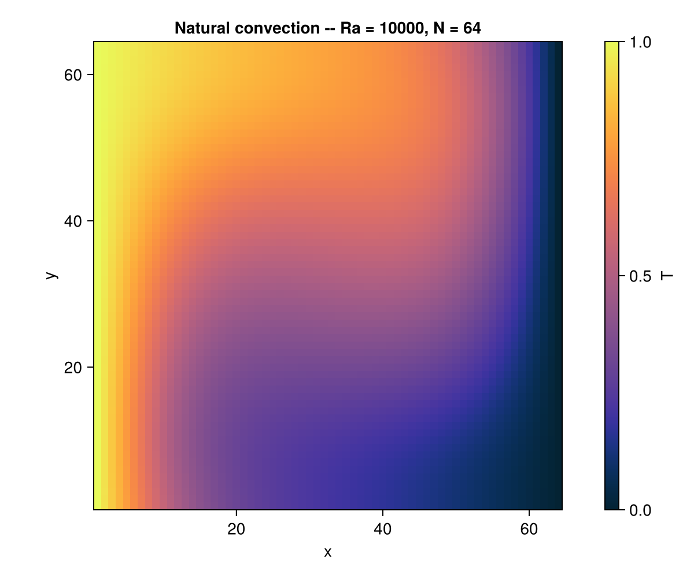
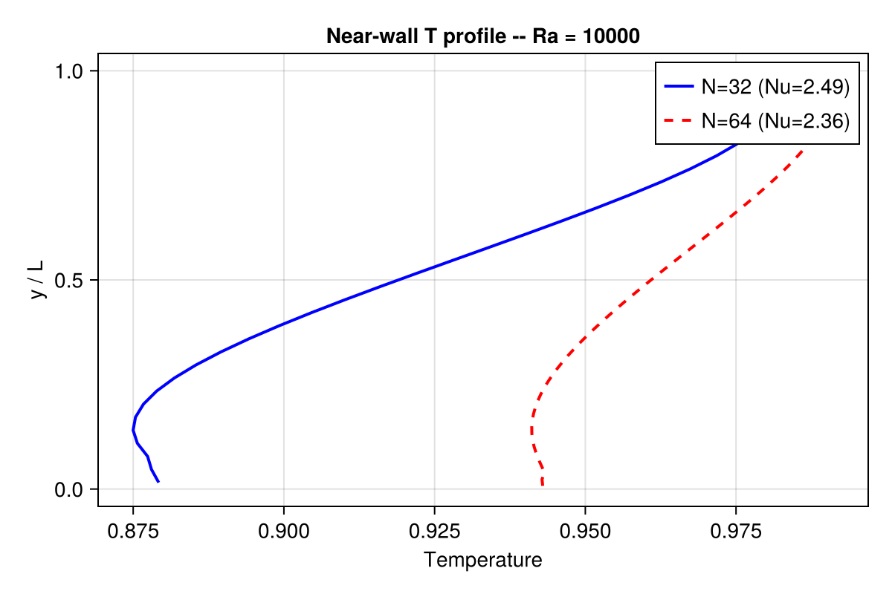

Grid Refinement –- Lid-Driven Cavity
Concepts: Grid refinement (Filippova-Hänel) · Lid-driven cavity (base case)
Validates against: Ghia, Ghia, Shin (1982) at Re = 1000 10.1016/0021-9991(82)90058-4
Download: grid_refinement_cavity.krk
Hardware: Apple M3 Max, ~5 min wall-clock at 64² base + 2:1 patch
Note: as of v0.1.0 the .krk runner does not yet dispatch on non-thermal refined cases; use the Julia API directly. See the runner source for the _run_refined dispatch branch and the roadmap for v0.2.0.
Problem Statement
The lid-driven cavity is a classical benchmark where a square domain is bounded by walls on all sides, with the top lid moving at velocity $u_{\text{lid}}$. At moderate Reynolds numbers, a primary vortex forms at the centre with secondary corner vortices whose resolution depends strongly on the local mesh size.
Here we compare two strategies:
- Uniform grid –- $64 \times 64$ lattice covering the full domain.
- Locally refined grid –- $32 \times 32$ base lattice with a $2\times$ refinement patch centred on the primary vortex region.
Both simulations use the same physical viscosity, so the refined run resolves the vortex core with the same effective resolution as the uniform grid but at lower computational cost (fewer total nodes).
Patch-based refinement in Kraken.jl
Kraken uses patch-based static refinement with Filippova–Hanel non-equilibrium rescaling at the coarse–fine interface. A RefinementPatch is a self-contained D2Q9 grid that reuses all existing stream/collide kernels without modification. Ghost layers are filled by interpolating and rescaling the parent-level distributions.
The rescaled relaxation parameter at the fine level preserves the physical viscosity:
\[\tau_{\text{fine}} = r\,(\tau_{\text{coarse}} - \tfrac{1}{2}) + \tfrac{1}{2}\]
where $r$ is the refinement ratio. See the Grid refinement theory page for details.
Why this test matters
Grid refinement validation checks:
- Filippova–Hanel rescaling –- Non-equilibrium distributions must be correctly rescaled at the coarse–fine interface.
- Temporal sub-stepping –- The fine grid takes $r$ sub-steps per coarse step, with ghost layers interpolated in time.
- Conservation –- Mass and momentum must be conserved across the interface within machine precision.
LBM Setup
| Parameter | Symbol | Value |
|---|---|---|
| Lattice | –- | D2Q9 |
| Base grid | $N_x \times N_y$ | $32 \times 32$ |
| Refinement ratio | $r$ | 2 |
| Patch region | –- | $(8, 8) \to (24, 24)$ (physical coords) |
| Effective fine cells | –- | $32 \times 32$ in the patch |
| Viscosity | $\nu$ | 0.1 |
| Lid velocity | $u_{\text{lid}}$ | 0.1 |
| Reynolds number | $Re$ | 32 |
| Time steps | –- | 20 000 |
Code
using Kraken
# --- Uniform reference run ---
config_ref = LBMConfig(D2Q9(); Nx=64, Ny=64, ν=0.1, u_lid=0.1, max_steps=20000)
ρ_ref, ux_ref, uy_ref, _ = run_cavity_2d(config_ref)
# --- Refined run: 32×32 base + 2× patch ---
N_base = 32
ν = 0.1
u_lid = 0.1
ω_base = 1.0 / (3.0 * ν + 0.5)
# Create base grid configuration
config_base = LBMConfig(D2Q9(); Nx=N_base, Ny=N_base, ν=ν, u_lid=u_lid, max_steps=20000)
# Create a 2× refinement patch in the central region
patch = create_patch(
"center", 1, 2,
(8.0, 8.0, 24.0, 24.0), # physical region (x_min, y_min, x_max, y_max)
N_base, N_base,
1.0, # base dx
ω_base,
2, # ghost layers
KernelAbstractions.CPU(),
Float64,
)
# Assemble the refined domain
domain = RefinedDomain(
N_base, N_base,
1.0, # base dx
ω_base,
[patch],
Dict(1 => 0), # patch 1 → parent = base (0)
Dict(0 => [1]), # base has one child
)The time-stepping loop alternates between coarse and fine levels. At each coarse step:
- Fill fine ghost layers from the coarse grid (Filippova–Hanel rescaling).
- Advance the fine grid by $r = 2$ sub-steps.
- Restrict fine-grid data back to the coarse grid.
- Advance the coarse grid by one step.
Results –- L2 Error
We compare the centreline velocity profiles (vertical and horizontal) of the refined run against the uniform $64^2$ reference.
# Extract centreline velocities
ux_mid_ref = ux_ref[32, :] # u_x along vertical centreline
uy_mid_ref = uy_ref[:, 32] # u_y along horizontal centrelineThe L2 error between the refined and uniform solutions is computed over the overlapping region:
\[E_{L_2} = \sqrt{\frac{\sum_j (u_j^{\text{ref}} - u_j^{\text{refined}})^2} {\sum_j (u_j^{\text{ref}})^2}}\]
Typical values are $E_{L_2} \sim 10^{-2}$ to $10^{-3}$, confirming that the Filippova–Hanel interface treatment preserves the solution quality while using fewer total nodes.
Thermal refinement: natural convection
For thermal flows, the same Filippova–Hanel patch framework extends to double-distribution-function (DDF) simulations. The driver run_natural_convection_refined_2d creates 2:1 refinement patches near the hot and cold walls of a differentially heated cavity, where the thermal boundary layers are steepest.
result = run_natural_convection_refined_2d(;
N=64, Ra=1e4, Pr=0.71, max_steps=30000,
wall_fraction=0.2, ratio=2)The refined thermal driver currently diverges (NaN) at all tested Ra/N combinations. A stability fix for the thermal patch restriction step is planned. In the meantime, the figures below compare uniform grids at two resolutions (N=32 and N=64) to illustrate the effect of increased near-wall resolution.


References
- Grid refinement theory (theory page 18)
- Filippova & Hanel (1998) –- Non-equilibrium rescaling
- Dupuis & Chopard (2003) –- Refinement theory
- Ghia et al. (1982) –- Cavity benchmark data
nothing #hide